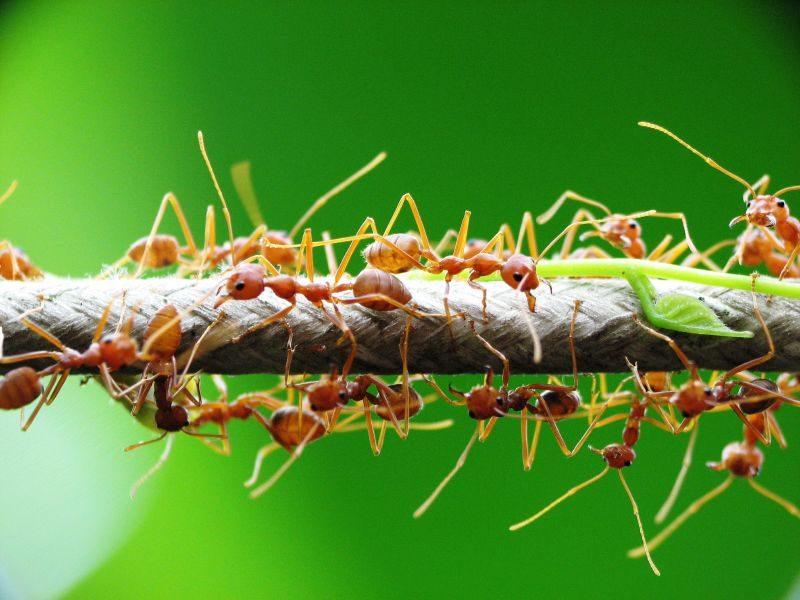

बयनी चींटीWeaver Ant
Oecophylla smaragdina · Formicidae · INS-0008

- Scientific name
- Oecophylla smaragdina (Fabricius, 1775)
- Family
- Formicidae
- Hindi
- बयनी चींटी / लाल बड़ी चींटी / सोने चींटी
- Status here
- native
- IUCN
- not evaluated
When to look कब देखें
Present all year.
Weaver Ant / Green Weaver Ant
Oecophylla smaragdina (Fabricius, 1775) — Formicidae
बयनी चींटी — प्रकृति के सबसे कुशल वास्तुकारों में से एक है। कामगार चींटियाँ ज़िंदा पत्तियों को आपस में जोड़कर घोंसला बनाती हैं — इसके लिए वे अपने लार्वा को "ग्लू-गन" की तरह इस्तेमाल करती हैं। लार्वा रेशम के धागे उगलते हैं, जिनसे पत्तियाँ सिल जाती हैं। पूर्वी UP के आम बागों में यह लाल-नारंगी चींटी हर किसान की जानी-पहचानी है — काटती है ज़ोर से, पर आम के कीड़े खाकर बाग का ख़याल भी रखती है।
Quick Identification त्वरित पहचान
| Feature | Description |
|---|---|
| Major workers | Large (8–10 mm), orange-red, large head, powerful mandibles |
| Minor workers | Smaller (4–6 mm), paler orange |
| Queen | 20–25 mm; greenish tint to gaster — "smaragdina" = emerald-like |
| Nest | Living leaf nest in tree canopy — leaves stitched together with silk |
| Behaviour | Extremely aggressive territory defenders; painful bite |
| Habitat | Almost always in fruit tree canopies, especially mango |
Field tip: The large orange-red ants running rapidly in long lines on mango tree trunks are unmistakably weaver ants. If you approach, they rear up in a characteristic threat posture. Leaf nests in the canopy look like folded or crinkled leaf clusters.
Morphology आकारिकी
| Caste / Feature | Measurement |
|---|---|
| Major worker body length | 8–10 mm |
| Minor worker body length | 4–6 mm |
| Queen body length | 20–25 mm |
| Male (drone) body length | 6–7 mm |
Worker castes: Two distinct castes — major (large) and minor (small) workers. Both orange-red with paler gaster (abdomen). The queen is much larger and has a faint greenish tinge (the species name smaragdina = emerald-coloured, referring to the queen).
Head and mandibles: Major workers have large, powerful, toothed mandibles capable of painful bites. They also spray formic acid when biting, intensifying the pain.
Gaster: The bulbous abdomen can be used to determine satiation — a well-fed worker has a stretched, paler gaster; a hungry worker has a compressed, darker one.
Antennae: Elbowed. Used extensively in tactile communication and trail-following.
Ecological Role पारिस्थितिक भूमिका
The nest-building marvel — larval silk as construction material: Weaver ant colonies build their nests by stitching live leaves together with silk. But adult ants produce no silk — only larvae do. The construction process is extraordinary:
- Major workers grip the edges of two leaves and pull them together
- When leaves are close, a worker picks up a larva in her mandibles
- She moves the larva back and forth between the leaf edges, like a shuttle
- The larva, stimulated by this movement, spins silk from its silk glands
- The silk binds the leaves together
- The worker replaces the larva in the brood chamber and picks up another
This is tool use — the adult uses the larva as a biological tool. The nest is a living, growing structure maintained continuously.
Canopy territory: A single Oecophylla colony occupies 2–4 trees, with thousands of workers patrolling every branch. They aggressively drive away insects, lizards, and even human hands from their territory.
Biological pest control: Weaver ants are highly effective predators of mango pests — mango hoppers, mealybugs, caterpillars, fruit flies, and scale insects. Studies in India and Southeast Asia show significant reduction in pest damage on mango and cashew trees where Oecophylla colonies are present.
Life Cycle / Phenology जीवन चक्र
| Month | Event |
|---|---|
| Feb–Apr | Nest building/renovation; active foraging |
| Jun–Aug | Alate (winged) queens and males produced; mating flights after monsoon rains |
| Jun–Sep | New colony founding by mated queens |
| Year-round | Worker foraging; brood rearing; territory defense |
Colony cycle: An established colony can persist for years in the same tree. Queens live 3–5 years. Workers live 2–3 months. Colony size: 100,000–500,000 workers across multiple trees.
Mating flight: After monsoon rains, winged queens and drones emerge from nests, mate in flight, then queens land and try to establish a new colony. Most fail — only a few survive to found successful new colonies.
Colony fragmentation: If a colony becomes very large or trees are cut, the colony may split — a natural process that spreads the colony across a wider tree area.
Agricultural / Human Relevance कृषि एवं मानव उपयोग
Traditional biological pest control in mango orchards: In eastern UP, older farmers know that a mango tree with weaver ant nests has fewer pests. The traditional practice of not disturbing weaver ant colonies in mango trees is a form of indigenous biological control — preserved through observational knowledge even without formal understanding.
Scientific validation: Studies in India show 40–60% reduction in mango hopper damage on trees with established Oecophylla colonies versus ant-free trees.
Larvae as fish bait: Weaver ant larvae (white, grub-like, from raided nests) are prized as fish bait in eastern UP — particularly effective for freshwater fish like rohu (FSH-0001). Local fishermen know to look for ant nests in canopy trees overhanging ponds.
Ant repellent needed: When pest spraying is necessary, weaver ants may die — indirectly allowing pest resurgence by removing the biological control. Integrated Pest Management (IPM) programmes try to preserve weaver ant colonies by using selective pesticides.
Painful bite: Workers bite fiercely and spray formic acid simultaneously. Children climbing mango trees are frequently bitten — a common childhood experience in eastern UP. The pain is intense but rarely dangerous (unless allergic).
Food use: In some parts of India (Chhattisgarh, Odisha), weaver ant larvae and eggs are eaten as a protein source — "चपड़ा चटनी" (chapra chutney). Not common in UP but worth documenting.
Expected Locally स्थानीय रूप से अपेक्षित
Not a field record. Written from published accounts for eastern Uttar Pradesh. No confirmed local sighting yet — if you have seen it, that is what the atlas needs.
अभी तक स्थानीय पुष्टि नहीं। यह विवरण प्रकाशित स्रोतों से है, किसी अवलोकन से नहीं।
In Basti district, Weaver Ants are extremely common in mature mango orchards. Trails of major workers can be observed constantly moving between trees. During harvest season, pickers routinely take care to avoid the distinctive folded-leaf nests to prevent painful bites. Fishermen are occasionally seen poking nests in overhanging branches along river channels to gather larvae for bait. The species is locally known as bayni chinti or lal badi chinti.
Distribution वितरण
Global range: Widespread across the tropical Indo-Australian region, ranging from India through Southeast Asia to southern China, the Philippines, New Guinea, and northern Australia.
In India: Widespread in all warm, humid plains and forested regions of the country, particularly common in states with extensive fruit orchards.
In Uttar Pradesh: Distributed throughout the state, highly common in mango-growing belts of central, western, and eastern UP.
In Basti district / eastern UP: Highly abundant in mature mango orchards, village home gardens, and roadside groves of jackfruit and guava trees.
Range notes: No significant range changes documented, but population densities closely follow fruit orchard cover.
Research Questions शोध प्रश्न
- Can the indigenous practice of preserving weaver ant colonies in mango orchards near Basti be documented as a functional biological control system — with quantitative pest reduction data?
- What is the territory size of a weaver ant colony in old mango orchards of eastern UP — how many trees per colony?
- Is weaver ant larvae/egg collection for fish bait creating significant colony disruption near riverbank orchards?
- How does pesticide spraying frequency in mango orchards correlate with weaver ant colony presence — are ant-preserved orchards identifiable?
- Do weaver ants interact with Asian Honey Bee (Apis cerana, INS-0007) in shared mango trees — competition or neutral?
Similar Species मिलती-जुलती प्रजातियाँ
| Species | How to distinguish |
|---|---|
| Oecophylla longinoda (African Weaver Ant) | Africa only — not in India |
| Camponotus spp. (Carpenter Ants) | Much larger; black; nest in dead wood not live leaves |
| Solenopsis geminata (Fire Ant) | Smaller, reddish-brown; ground-nesting; painful sting (not bite) |
Taxonomy & Classification वर्गीकरण
Original description. Oecophylla smaragdina was described by Johan Christian Fabricius in 1775 as Formica smaragdina in Systema Entomologiae, page 392. Type locality: India. The genus Oecophylla was established by Frederick Smith in 1860, and this species was subsequently transferred to it. The genus name is derived from the Greek oikos (house) and phylla (leaves), referring to their nest construction, while smaragdina is Latin for emerald-green, describing the queen's color.
Subspecies. Monotypic in India — no subspecies are currently recognised for the Indian subcontinent populations, though island subspecies have historically been described from Indonesia.
Family and order placement. Belongs to the order Hymenoptera, suborder Apocrita, family Formicidae (ants), subfamily Formicinae, tribe Oecophyllini. The genus Oecophylla is a small, specialized group of arboreal ants containing only two extant species: O. smaragdina in the Indo-Australian region and O. longinoda in sub-Saharan Africa.
Phylogenetic notes. Fossil records indicate that Oecophylla was much more widespread and diverse in the geological past. Molecular studies show that the Asian and African sister species diverged millions of years ago, maintaining highly conserved nest-weaving behaviors.
IUCN status rationale. This species has not been formally assessed by the IUCN Red List. As a highly successful and widely distributed arboreal ant that thrives in agroforestry systems, it is not considered of conservation concern, though local populations can be affected by intensive broad-spectrum pesticide spraying in orchards.
Photo Gallery फोटो गैलरी
Atlas Connections संबंधित प्रजातियाँ
- FLR-0011 Mango — primary habitat tree; biological pest control relationship
- FLR-0023 Custard Apple — secondary host tree; ants patrol branches
- FSH-0001 Rohu — indirect link: larvae used as fish bait by fishermen
- INS-0007 Asian Honey Bee — shares mango tree; occasional aggressive interaction
- REP-0001 Garden Lizard — lizards raided by ant colonies when entering territory
References संदर्भ
- Fabricius, J.C. (1775). Systema Entomologiae, sistens insectorum classes, ordines, genera, species, adiectis synonymis, locis, descriptionibus, observationibus. Officina Libraria Kortii, Flensburgi et Lipsiae.
- Way, M.J. & Khoo, K.C. (1992). Role of ants in pest management. Annual Review of Entomology, 37(1), 479–503.
- Peng, R.K., Christian, K. & Gibb, K. (1995). The behaviour of the weaver ant, Oecophylla smaragdina (Hymenoptera: Formicidae) and its applicability to the control of leaf-associated pests on mango trees. Biotropica, 27(2), 195–200.
- Blüthgen, N. & Fiedler, K. (2002). Interactions between weaver ants, honeydew-producing insects and figs. Oecologia, 133(2), 161–169.
- Zoological Survey of India (2018). Fauna of Uttar Pradesh, State Fauna Series, 22. ZSI, Kolkata.
- GBIF Occurrence Data — Oecophylla smaragdina, India (2026).
Source file: species/fauna/insects/weaver_ant.md